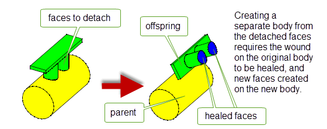
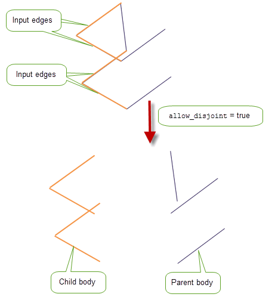

| |
Creating New Bodies From Existing Entities |
| <<< Moving Faces | Chapters | Generic Face Editing >>> |
Parasolid can create new solid bodies from existing faces in a body, either by copying them or by removing them from the existing body. If the faces used to create a body are such that the body contains wounds, then they are healed using the same techniques used for deleting face
PK_FACE_make_solid_bodies creates a solid from an array of faces by copying the selected faces to make one or more new solids. The faces are not deleted from the original body and if the faces form a shell of a sheet or a solid, the shell is then copied to the new solid. Any missing faces of the shell are treated as holes to be healed as described in Section 72.3, “Healing wounds”.
|
Note: This functionality offers partial support for facet bodies. |
PK_FACE_remove_to_solid_bodies removes faces from a body and uses them to make one or more new solid bodies.
|
Note: This functionality offers partial support for facet bodies. |
Any wounds left in either parent or child bodies can be healed as described in Section 72.3, “Healing wounds”. Wounds in parent bodies and child bodies can be healed differently if desired.
Figure 72-1 Healing holes (wounds) using ‘Grow from Parent’
|
Note: The parent body may become fragmented due to faces being removed. In such cases, there are several parent bodies. |
Wounds created by PK_FACE_make_solid_bodies or PK_FACE_remove_to_solid_bodies can be healed using similar methods to those available to PK_FACE_delete_2. See Chapter 64, “Deleting Entities” for full details.
PK_EDGE_remove_to_bodies removes wireframe edges from a body and uses them to make a number of new bodies. It receives and returns the following arguments:
|
|
|
An array of input edges. These edges must belong to the same body. |
|
Options controlling the final form of the body. The following options are available:
|
|
|
parent_bodies |
|
n_child_bodies |
|
child_bodies |
|
tracking |
PK_EDGE_remove_to_bodies takes an array of
edges
and splits their owning bodies into child and parent bodies. Child bodies result from
edges
and parent bodies result from the remaining body.
Note: The original edge tags from
edges
are preserved during this operation. |
If
allow_disjoint
is PK_LOGICAL_false, multiple child and parent bodies can be returned, depending on the connectivity of the parent and child components. In the example illustrated in
Figure 72-2, one child and two parent bodies are returned.
Figure 72-3 illustrates a case where
allow_disjoint
is PK_LOGICAL_true, and therefore only 2 bodies are returned; one child and one parent body.
Figure 72-2 Splitting a body when disjoint bodies are not allowed.
Figure 72-3 Splitting a body when disjoint bodies are allowed.
| <<< Moving Faces | Chapters | Generic Face Editing >>> |